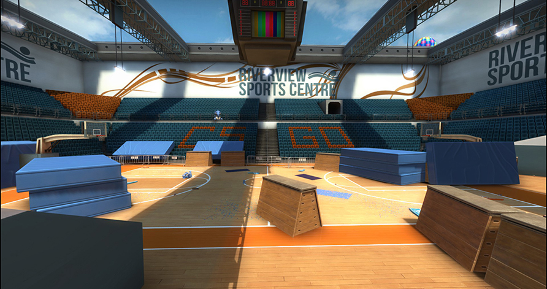

Hostage rescue maps in opperation Vanguard
Backalley
Backalley (cs_backalley) is a Hostage Rescue map featured in Counter-Strike. A community remade version was reintroduced in Counter-Strike: Global Offensive through Operation Vanguard, known as Backalley ("Back Alley" in-game). The map is set in an urban area at night, in and between plenty of apartment blocks. It features many vertical elements and cramped hallways. On the October 13, 2016 Update, the map was removed from the game files, making Backalley inaccessible via console.
Workout
Workout (cs_workout) is a hostage rescue map created by Skybex and featured as part of Operation Vanguard in Counter-Strike: Global Offensive. Hostages have been taken in a luxury river front sports complex. On the October 13, 2016 Update, the map was removed from the game files, making Workout inaccessible via console. On April 25, 2019, the map was added back in to Counter-Strike: Global Offensive as an official hostage rescue map. The map was removed from official matchmaking on the July 31, 2019 update.